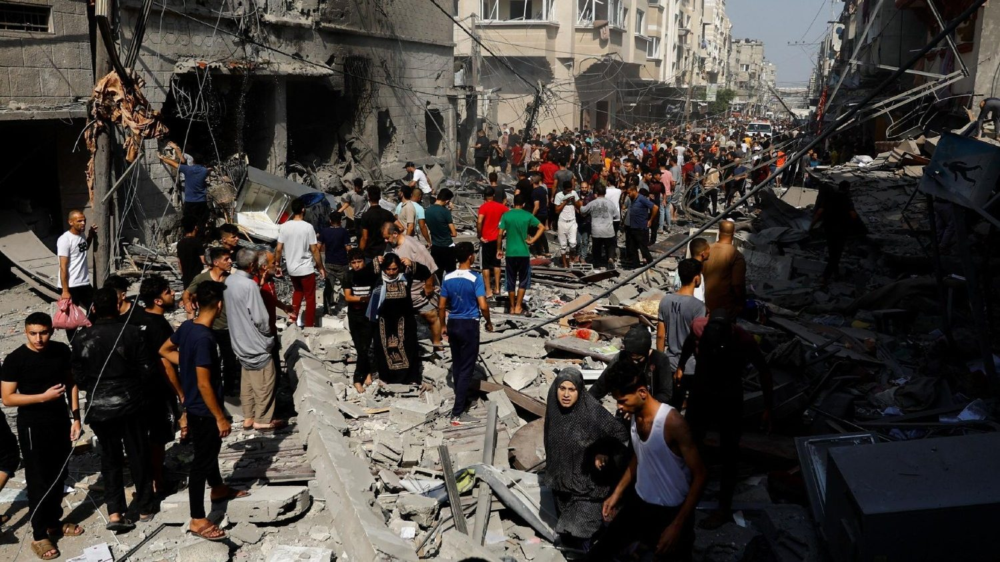

Consequências Humanitárias
|  | O conflito entre Israel e Palestina, que já dura décadas, tem gerado uma série de consequências devastadoras, particularmente na Faixa de Gaza. Com mais de 40 mil mortos somados entre os dois lados, o cenário atual é marcado por um imenso sofrimento humano, deslocamento forçado e a destruição de infraestruturas essenciais. Milhares de pessoas se viram obrigadas a deixar suas casas, em busca de abrigo e segurança, enquanto enfrentam uma grave escassez de recursos como água, eletricidade e, acima de tudo, esperança de um futuro pacífico. Crise HumanitáriaA crise humanitária resultante deste conflito é alarmante. O sofrimento humano é palpável, com um número crescente de mortos e feridos e a deslocação de comunidades inteiras, que lutam diariamente para sobreviver em condições precárias. Organizações internacionais têm alertado para a necessidade urgente de ajuda humanitária, mas o acesso a assistência é frequentemente dificultado por hostilidades e bloqueios. |
Instabilidade Regional
Além do impacto direto sobre os civis, o conflito também contribui para a instabilidade em todo o Oriente Médio. A contínua violência e a falta de um acordo de paz efetivo prejudicam não apenas a segurança de Israel e da Palestina, mas também comprometem o desenvolvimento econômico e social de países vizinhos, criando um ciclo de instabilidade que pode se espalhar rapidamente pela região.
Impacto Internacional
As repercussões do conflito se estendem além das fronteiras do Oriente Médio, influenciando as relações internacionais e moldando as políticas externas de diversas nações. Países de todo o mundo são confrontados com a necessidade de posicionar-se em relação ao conflito, o que frequentemente gera tensões diplomáticas e polarização de opiniões.
Radicalização e Extremismo
A situação também alimenta o radicalismo e o extremismo, tornando-se um terreno fértil para a disseminação de ideologias violentas. O desespero e a frustração gerados pela falta de perspectiva e oportunidades de paz contribuem para a radicalização de jovens, que podem ser atraídos por grupos extremistas que prometem soluções violentas para suas queixas.
Obstáculo para a Paz
Por fim, a falta de uma resolução duradoura para o conflito continua a ser um dos maiores obstáculos à paz no Oriente Médio. Os ciclos de violência, desconfiança e retaliação dificultam as negociações, e os sonhos de coexistência pacífica parecem cada vez mais distantes
Em suma, o conflito entre Israel e Palestina não é apenas uma questão regional; suas implicações se estendem globalmente, afetando a segurança, a política e a vida de milhões de pessoas. A comunidade internacional deve se unir para buscar soluções sustentáveis que promovam a paz e a dignidade para todos os envolvidos.
Soluções e Perspectivas
A Solução de dois Estados é um projeto de criação e de coexistência pacífica dos Estados independentes de Israel e da Palestina que visa acabar com as disputas de soberania política, territorial e militar na região. No entanto, não há consenso sobre os termos desta proposta. Enquanto algumas organizações políticas palestinas, como a Organização para a Libertação da Palestina (OLP), reconhecem a legitimidade e a soberania de Israel, outras, como o Hamas, pretendem a existência apenas de um Estado Palestino.
Um caminho sugerido é o fortalecimento dos acordos de paz entre Israel e outros países árabes, como o Egito e a Jordânia, e mais recentemente, os Acordos de Abraão, que normalizaram as relações entre Israel e alguns estados do Golfo, como os Emirados Árabes Unidos. A ideia é que uma maior integração de Israel na região possa pressionar pela resolução do conflito palestino.
Outra solução, menos popular entre os governos, é a criação de um único Estado, onde israelenses e palestinos teriam direitos iguais. Isso implica a dissolução das fronteiras e a integração dos dois povos em uma única nação. No entanto, essa ideia é rejeitada por muitos em Israel, pois poderia ameaçar a maioria judaica no país.